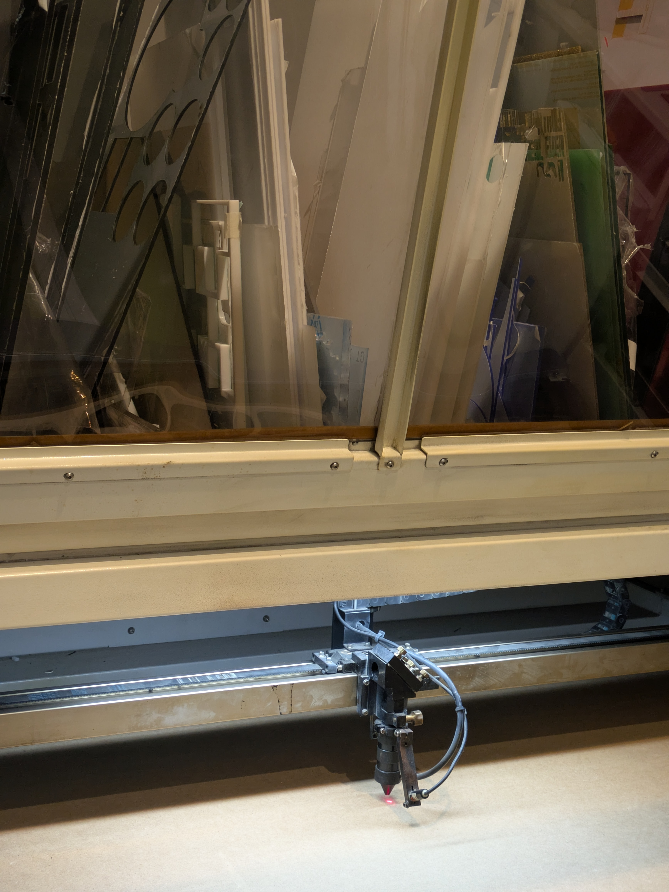
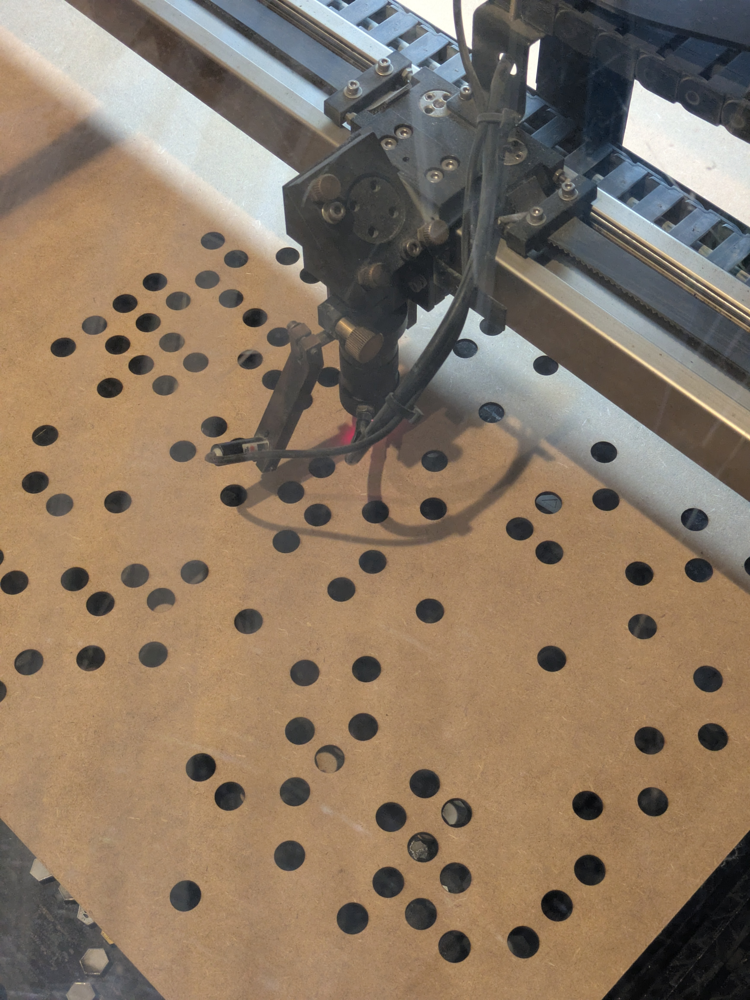
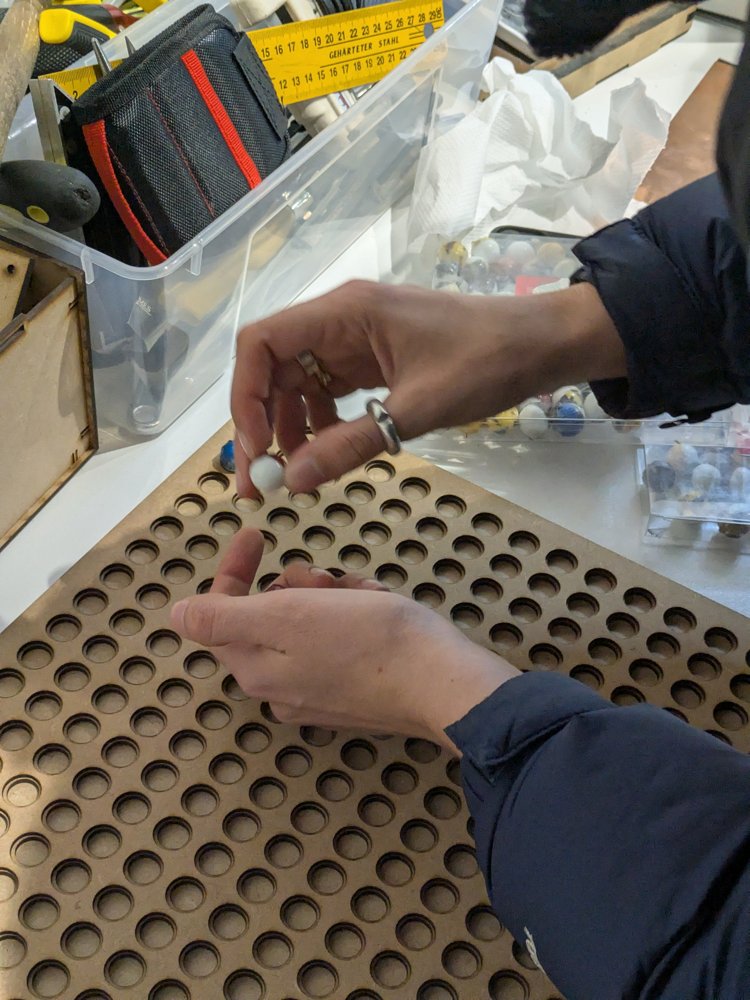
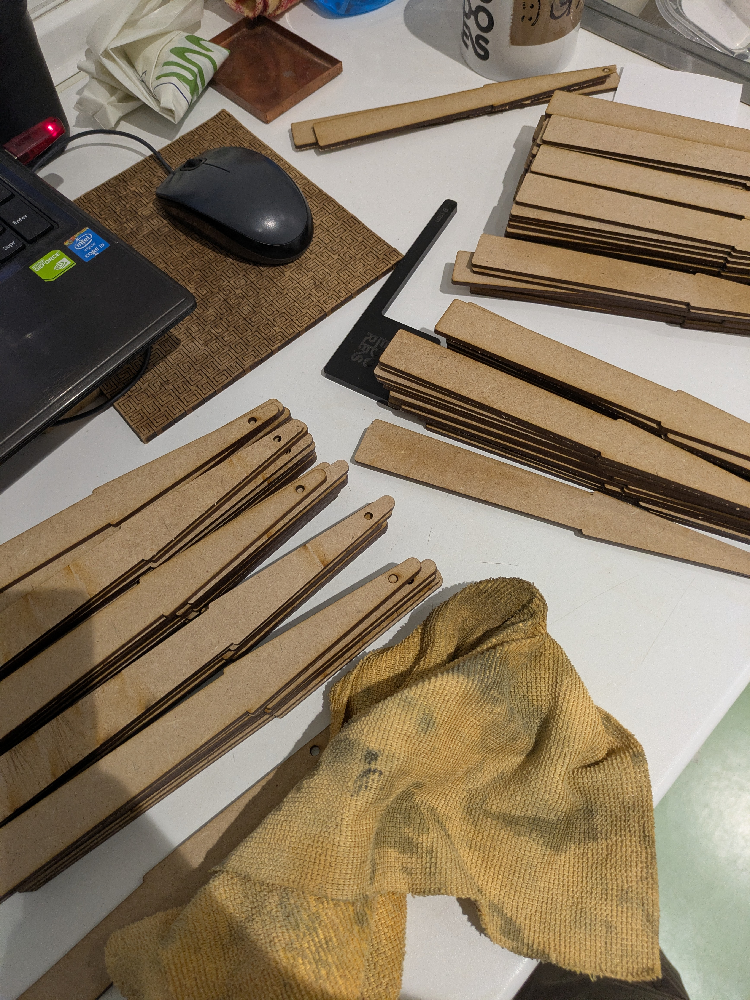

PRACTICE
Laser Cutting
Hands-on practice in laser cutting, file preparation and fabrication workflows
Experience using laser cutting as a precise and efficient tool for prototyping, part development and material exploration, especially in projects that require speed, repeatability and clean 2D production logic.
Familiar with file preparation, vector cleaning, layer organization, cut versus engrave logic and parameter adjustment according to material thickness, finish and fabrication intent.
This practice has been especially useful for understanding tolerances, assembly systems, nesting strategies and how flat geometries can translate into structural or spatial outcomes through accurate fabrication.
Precision, Assembly & Material Logic
FILE PREP · NESTING · FABRICATIONLaser cutting has been part of my practice as both a prototyping method and a way to think through construction. It makes visible the relationship between digital precision and physical result, where line quality, tolerances and material behavior all affect the final outcome.
Working with this process has strengthened my understanding of how parts are organized for production, how assemblies can be simplified through flat geometries, and how fabrication constraints can become part of the design logic rather than just a final step.
Beyond speed and precision, laser cutting has been valuable as a design thinking tool, helping translate ideas quickly into testable pieces while building a more grounded understanding of process, structure and repeatability.



